Video transitions aim to synthesize intermediate frames between two clips, but naïve approaches such as linear blending introduce artifacts that limit professional use or break temporal coherence. Traditional techniques (cross-fades, morphing, frame interpolation) and recent generative inbetweening methods can produce high-quality plausible intermediates, but they struggle with bridging diverse clips involving large temporal gaps or significant semantic differences, leaving a gap for content-aware and visually coherent transitions. We address this challenge by drawing on artistic workflows, distilling strategies such as aligning silhouettes and interpolating salient features to preserve structure and perceptual continuity. Building on this, we propose SAGE (Structure-Aware Generative vidEo transitions) as a zeroshot approach that combines structural guidance, provided via line maps and motion flow, with generative synthesis, enabling smooth, semantically consistent transitions without fine-tuning. Extensive experiments and comparison with current alternatives, namely [FILM, TVG, DiffMorpher, VACE, GI], demonstrate that SAGE outperforms both classical and generative baselines on quantitative metrics and user studies for producing transitions between diverse clips. Code to be released on acceptance.
Scroll left/right
Hover/leave mouse on video to play/pause videos of entire row.
Input – Clip A |
Input – Clip B |
ours | FILM ['22] | TVG ['24] | DiffMorpher ['24] | VACE ['25] | GI ['25] | |
|---|---|---|---|---|---|---|---|---|
| Cab-train | ||||||||
| Helicopter-boat | ||||||||
| Fish-giraffe | ||||||||
| Skatepark-biker | ||||||||
| Candy-cloud | ||||||||
| Handkerchief-cruise | ||||||||
Input – Clip A |
Input – Clip B |
ours | FILM ['22] | TVG ['24] | DiffMorpher ['24] | VACE ['25] | GI ['25] |
We selected two challenging examples from the SEINE project page where the start and end frames differ significantly. To create comparable inputs, we generated short video clips around these frames using an image-to-video model. We then applied SAGE to these clip pairs. The results below highlight that SAGE produces smoother, structurally consistent transitions, while SEINE often struggles with motion coherence and structural stability in such diverse settings.
| ours | SEINE ['23] |
|---|---|
Hover/leave mouse to play/pause each input video.
Input – Clip A |
Flow |
Interpolation |
Flow |
Input – Clip B |
|
|---|---|---|---|---|---|
| Cab-train | 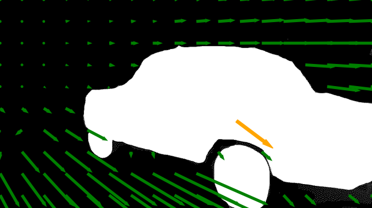 | 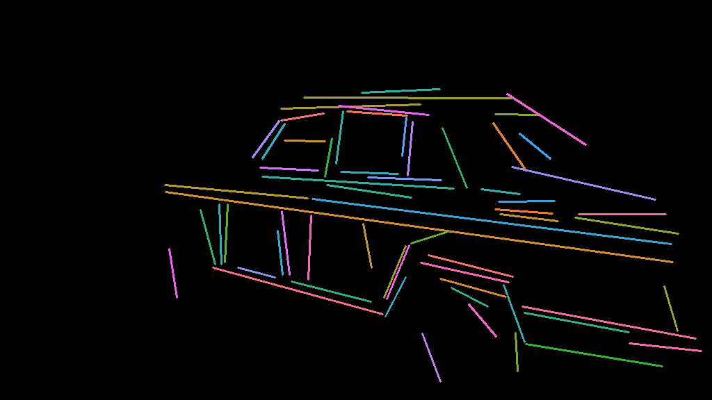 | 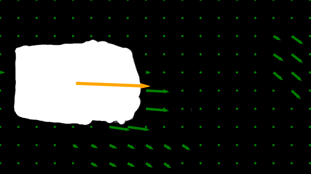 | ||
| Helicopter-boat | 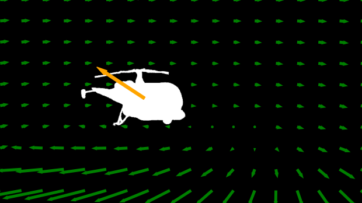 | 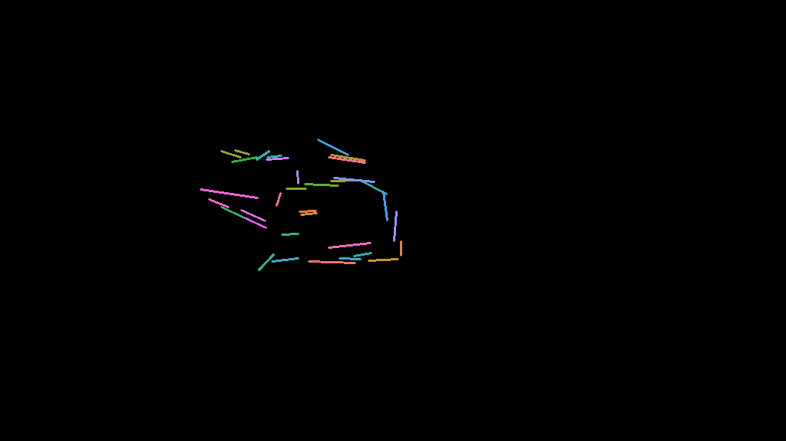 | 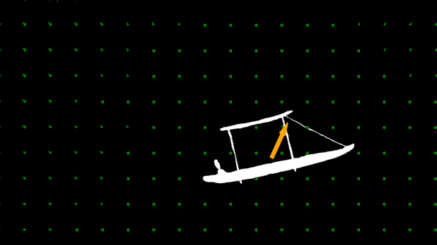 | ||
| Surfer-speedboat | 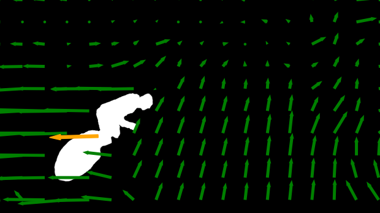 | 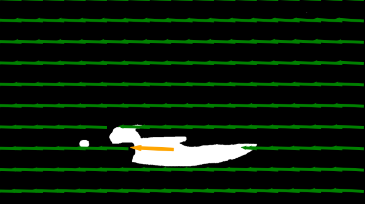 | |||
| Horse-dog | 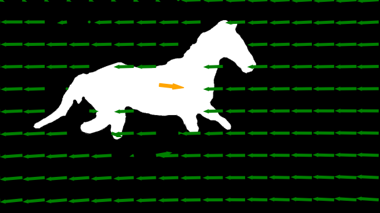 | 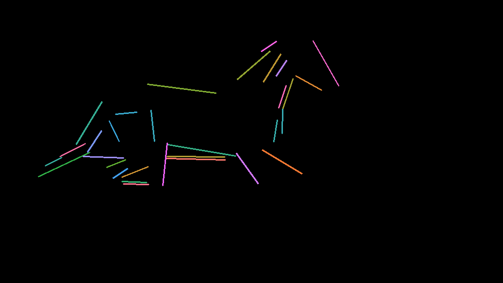 | 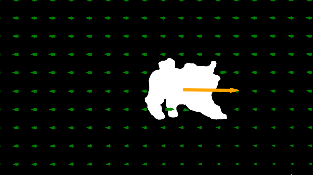 |
Note that when the motions in the two source clips are already well aligned, simple linear blending of matched structures performs comparably to our B-spline approach. However, for more diverse clip pairs—where motion trajectories differ in direction, scale, or continuity—B-spline interpolation produces smoother global paths and more natural motion inbetweening, avoiding the abrupt shifts and trajectory crossings that arise with linear blending.
* Note: In the top row, the detected lines are shown only during the transition frames.